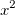
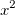
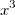
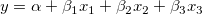
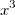
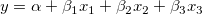
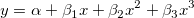
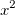
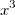
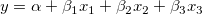

を
を 、を
、を 、をとして考えると、式は、となるので、Xファンクションxopで重回帰を実行して、結果をツリーに取得します。そして、得られたパラメータが3次の多項式フィットの結果と同じであることを確かめます。
、をとして考えると、式は、となるので、Xファンクションxopで重回帰を実行して、結果をツリーに取得します。そして、得られたパラメータが3次の多項式フィットの結果と同じであることを確かめます。次のコードは、第1シートにXYYYY形式のデータを持つアクティブブックに対して動作します。結果のフィット線は新しく作成されたシートに追加されます。このフィットデータを使用してグラフを作成します。
string mybk$ = %H; // アクティブワークブック名を保存 newsheet name:=FitLines outname:=FitLines$ cols:=1; // フィットデータを保持するシートを追加 range aa = 1!; // 最初のシート。1つのデータシートのみと仮定 range bb = %(FitLines$); // 新しく追加されたシートの名前を変数FitLines$に保存 bb.nCols = aa.nCols; // 追加したシートに新しい列を追加 // 全ての列にループして線形フィットを実行し、結果を新しいシートに出力 // Xファンクションfitlrを使用 dataset slopes, intercepts; // フィット結果のパラメータを保存 slopes.SetSize(aa.nCols-1); // データワークシートのYの数 intercepts.SetSize(slopes.GetSize()); // 後で使用 loop(ii, 2, aa.nCols) { range dd = 1!(1, $(ii)); fitlr iy:=dd oy:=%(FitLines$)(1, wcol(ii)); slopes[ii-1] = fitlr.b; // 2からループするのでii-1 intercepts[ii-1] = fitlr.a; } // 全ソースデータとフィットデータをプロット // 名前と傾きを表示するラベルを追加 loop(ii, 2, aa.nCols) { range data = [mybk$]1!(1, wcol(ii)); range fit = %(FitLines$)(1, wcol(ii)); win -t plot; // 新しいグラフウィンドウを作成 plotxy data plot:=201 ogl:=<active>; // ソースデータを散布図として作図 plotxy fit plot:=200 rescale:=0 color:=color(red) ogl:=<active>; // フィットデータを赤い線で作図 label -r legend; // 凡例は不要なので削除 label -s -q 2 -n myLabel1 "Linear Fit to %(1, @LM)%(CRLF)slope=$(slopes[ii-1])"; }
以下のスクリプトは、1950年からのアメリカの人口データをフィットして人口が4億を超える年はいつかを調べます。
// アメリカの人口データをSPウェブサイトから取得 string fname$ = "%YUSpop.txt"; string url$ = "https://research.stlouisfed.org/fred2/data/POP.txt"; web2file; if(exist(fname$) <= 0) { type "failed to get " + url$; return 0; } // プロジェクトをクリアして空のスペースから開始 doc -s; doc -n; {win -cd;} newbook s:=1 name:="US Population"; // データをインポート impAsc options.sparklines:=0 options.Miscellaneous.AllowAllText:=0; wks.nCols = 7; wks.Labels(LU); range aa = 1, bb = 2, yr = 3, pop = 4, param = 5, fitx = 6, fity = 7; int nMonths = aa.GetSize(); yr.type = 4; // X yr[L]$ = "Year"; pop[L]$ = "US Population"; pop[U]$ = "Thousands"; fitx.type = 4; fitx[L]$ = "LR Fit X"; fity[L]$ = "LR Fit Y"; int nYears = nMonths/12; // インポートされた月毎のデータから年数を取得 // 四月のデータをその年の人口として取得 for(int ii = 16, jj = 1; ii <= nMonths; ii+=12, jj++) { string str$ = aa[ii]$; string strYear$ = str.left(4)$; yr[jj] = %(strYear$); pop[jj] = bb[ii]; } plotxy pop plot:=201 ogl:=[<new>]; y2 = 405000; // 4億を少し超える数字 x2 = 2060; fitlr; // アクティブグラフのアクティブプロットをフィット fitx = data(x1, x2); // 増分1 = 1年 fity = fitlr.a+fitlr.b*fitx; param[1] = fitlr.a; param[2] = fitlr.b; plotxy fity 200 rescale:=0 ogl:=1!; // デフォルトXを使ってフィットYデータを再スケールせずにレイヤ１に追加 // 4億の位置に垂線を引く double yy = 400000; double xx = (yy-fitlr.a)/fitlr.b; type "US Population will reach 400M at year $(xx, %d)"; draw -l -v xx; // 凡例は不要なので削除 label -r legend;
ここでは、既存の線形フィット操作を取得し、いくつかの設定を変更して更新します。この操作はGUIでの、鍵アイコンをクリックしてパラメータの変更を選択し、設定を変更する操作に相当します。
// 線形フィットの分析テンプレートを開く string path$ = system.path.program$ + "Samples\Curve Fitting\Linear Regression.ogw"; doc -a %(path$); // テンプレートの"Data"シートをアクティブにし、サンプルデータファイルをインポート page.active$ = "Data"; string fname$ = system.path.program$ + "Samples\Curve Fitting\Sensor01.dat"; impasc; // 線形フィットのレポートシートからオペレーションツリーを取得 op_change ir:=FitLinear1! tr:=mytree; // 切片を0に固定 mytree.gui.fit.FixIntercept = 1; mytree.gui.fit.FixInterceptAt = 0; // 変更した設定で再計算 op_change ir:=FitLinear1! tr:=mytree op:=run;
Xファンクションxopを使って、GUIツリーの作成、パラメータの設定、フィットの実行、結果ツリーの生成、出力結果ツリーから結果の出力などの操作を含めた図上値でフィットを実行します。
// サンプルデータを開いてグラフを作成 string fname$ = system.path.program$ + "Samples\Curve Fitting\Apparent Fit.dat"; doc -s; doc -n; {win -cd;}; // プロジェクトをクリアして空のスペースで開始 newbook result:=apparentfit$; // データ用のワークブックを作成 impasc; // データをインポート plotxy (1,2); // 散布図を作成 layer.y.type = 2; // Y軸のタイプをLog10にする layer -a; // レイヤを再スケール // FitLinearクラスを使ってGUIツリー"lrGUI"を作成 tree lrGUI; xop execute:=init classname:=FitLinear iotrgui:=lrGUI; // アクティブプロットのデータを使用 // 図上値のフィットをセット lrGUI.GUI.Fit.ApparentFit = 1; // フィットを実行して結果をツリー"lrOut"に取得 xop execute:=run iotrgui:=lrGUI otrresult:=lrOut; // フィット後にオペレーションオブジェクトをクリーンナップ xop execute:=cleanup; // 出力ツリーから結果を取得して印字 type "The fitted result is:"; type "A = $(lrOut.Summary.R1.Intercept_Value), Error = $(lrOut.Summary.R1.Intercept_Error)"; type "B = $(lrOut.Summary.R1.Slope_Value), Error = $(lrOut.Summary.R1.Slope_Error)"; type "Forumla is:"; type "y = $(lrOut.Summary.R1.Slope_Value, %3.2f)x + $(lrOut.Summary.R1.Intercept_Value, %3.2f)";
1つのレイヤに複数データプロットのあるグラフで線形フィットを実行します。そして、グラフにすべてのフィット線を作成し、レポート表を作成します。
// 最初にデータをインポート filename$ = system.path.program$ + "Samples\Curve Fitting\Linear Fit.dat"; newbook; impASC filename$; //グラフを作成 range data = [<active>]1!(1, 2: wcol(wks.ncols)); plotxy data plot:=201 ogl:=<active>; // ソースデータを散布図としてプロット //FitLinearクラスを使用してGUIツリー"lrGUI"を作成する tree lrGUI; // GUIツリーをFitLinearクラスと初期化 xop execute:=init classname:=FitLinear iotrgui:=lrGUI; //グラフ上のすべてのデータプロットをGUIツリーの入力データとして指定 ii = 1; doc -e d //アクティブレイヤの全プロットにループ { %A = xof(%C); //XYデータセットを指定 lrGUI.GUI.InputData.Range$(ii).X$ = %A; lrGUI.GUI.InputData.Range$(ii).Y$ = %C; range rPlot = $(ii); //各データプロットをRange変数で定義 int uid = range2uid(rPlot); //get the uid of the range lrGUI.GUI.InputData.Range$(ii).SetAttribute("PlotObjUID", $(uid)); // uidをプロットにセット ii = ii + 1; } // 線形フィットを実行してGUIツリーのレポートを生成 xop execute:=report iotrgui:=lrGUI; // フィット後に線形フィットのオペレーションオブジェクトをクリーンナップ xop execute:=cleanup;
X列に日付が含まれている場合、内部的にユリウス日であるため、非常に大きな数値になります。内部的に、特殊なコードを使用してデータをシフトし、数値計算の丸めを最小限に抑えて適切なフィットが可能です。この例では、2010年以前の人民元対米ドルの為替レートへのフィットを行います。
次のスクリプトでは、OSの日付形式が MM/dd/yyyy (例：7/22/2005) である必要があります
// SP Web サイトからファイルを取得 string fname$ = "%YDEXCHUS.txt"; string url$ = "https://research.stlouisfed.org/fred2/data/DEXCHUS.txt"; web2file; if(exist(fname$) <= 0) { type "Failed to get " + url$; return 0; } // プロジェクトをクリーンアップして空のスペースから開始 doc -s; doc -n; {win -cd;} newbook sheet:=1; impAsc options.sparklines:=0; wks.col1.setFormat(4, 22, yyyy'-'MM'-'dd); range dd = 1, val = 2; dd[C]$ = "Date"; val[C]$ = "RMB vs USD"; // 誤った場所にインポートされた単位とロングネームのクリア dd[U]$ = ""; val[U]$ = ""; dd[L]$ = "Date"; val[L]$ = "Rate"; dd.width = 9; val.width = 7; wks.labels(LC); // 多項式フィットを格納するワークシートをセットアップ // 範囲変数をセットアップし全てを1つのワークシートに格納 range coef = 3, fitx = 4, fity = 5, fitplot = (4, 5); fitx = data(date(9/1/2005), date(1/1/2010), 90); fity = fitx; // 列作成のためにデータを入力 fitx.format = 4; // 日付 d0 = date(7/22/2005); // X (日付) 範囲の開始位置 d1 = date(1/4/2010); // X (日付) 範囲の終了位置 ii = list(d0, col(1)); // 対応する行 jj = list(d1, col(1)); // 対応する行を検索 // 3次多項式でフィットし、係数のみを取得 fitpoly (1, 2)[$(ii):$(jj)] 3 coef:=coef; fity = poly(fitx, coef); // 適切なラベルを付けて、プロット fitx.type = 4; // X列。実際にはプロットには必要ありませんが、ワークシートに表示されると便利 fity[C]$ = "3rd order polynomial fit"; plotxy (1, 2) 200; x1 = d0-10; x2 = date(1/1/2010); x3 = 365; // 1年ずつ y1 = 5; y2 = 8.5; plotxy fitplot 200 rescale:=0 ogl:=1!; // 保存されたプロット範囲を使用し、再スケールなしでレイヤ1に追加 range pp = 2; // 2番目のプロットは、新しいフィット曲線 set pp -c color(red);
Xファンクションxopで2次、3次の多項式フィットを実行します。
// サンプルデータを開く string fname$ = system.path.program$ + "Samples\Curve Fitting\Polynomial Fit.dat"; doc -s; doc -n; {win -cd;}; // プロジェクトをクリアして空のスペースから開始 newbook result:=polyfit$; // 新しいワークブックを作成 impasc; // データをインポート polyfit$ = %H; // 現在のワークブック名を取得 // フィット結果用のワークシート列をセットアップ wks.ncols = 6; // 3列追加 range coef = 4, fitx = 5, fity = 6, fitxy = (5, 6); coef[C]$ = "coefficients of 2nd polynomial fit"; fitx.type = 4; // X列 fitx = data(1, 100); // FitPolynomialクラスを使ってGUIツリー"polyGUI"を作成 tree polyGUI; xop execute:=init classname:=FitPolynomial iotrgui:=polyGUI; // 入力データをセット polyGUI.GUI.InputData.Range1.X$ = col(1); polyGUI.GUI.InputData.Range1.Y$ = col(2); // フィットを実行して結果ツリー"polyOut"を取得 xop execute:=run iotrgui:=polyGUI otrresult:=polyOut; // フィットの後にオペレーションオブジェクトをクリーンアップ xop execute:=cleanup; // 出力ツリーから係数を取得 coef[1] = polyOut.Parameters.Intercept.Value; coef[2] = polyOut.Parameters.B1.Value; coef[3] = polyOut.Parameters.B2.Value; // XからフィットYを生成 fity = poly(fitx, coef); fity[C]$ = "2nd order polynomial fit"; // グラフを作成 plotxy (1, 2); // 散布図 plotxy fitxy 200 rescale:=0 ogl:=1!; // 同じレイヤに折れ線グラフ range pp = 2; // 2番目のプロットはフィット線 set pp -c color(red); // 色を赤にする // 列3に同様の操作をする win -a %(polyfit$); // データワークブックをアクティブにする wks.ncols = 9; // 3列追加 range coef1 = 7, fitx1 = 8, fity1 = 9, fitxy1 = (8, 9); coef1[C]$ = "coefficients of 3rd polynomial fit"; fitx1.type = 4; // X列 fitx1 = data(1, 100); // FitPolynomialクラスを使用してGUIツリー"polyGUI"を作成 xop execute:=init classname:=FitPolynomial iotrgui:=polyGUI; // 入力データのセット polyGUI.GUI.InputData.Range1.X$ = col(1); polyGUI.GUI.InputData.Range1.Y$ = col(3); // 次数を3にセット polyGUI.GUI.Order = 3; // フィットを実行し結果をツリー"polyOut"に取得 xop execute:=run iotrgui:=polyGUI otrresult:=polyOut; // フィット後にオペレーションオブジェクトをクリーンナップ xop execute:=cleanup; // 出力ツリーから係数を取得 coef1[1] = polyOut.Parameters.Intercept.Value; coef1[2] = polyOut.Parameters.B1.Value; coef1[3] = polyOut.Parameters.B2.Value; coef1[4] = polyOut.Parameters.B3.Value; // XからフィットYを作成 fity1 = poly(fitx1, coef1); fity1[C]$ = "3rd order polynomial fit"; // グラフを作成 plotxy (1, 3); // 散布図 plotxy fitxy1 200 rescale:=0 ogl:=1!; // 同じレイヤに折れ線グラフ range pp1 = 2; // 2番目のプロットはフィット線 set pp1 -c color(red); // 色を赤にする
2つの成分（x1およびx2）からなる複合スペクトル（y）のデータがあります。これは という関係にあると仮定し、XファンクションfitMrを使用した重回帰を実行して、このモデルのパラメータを取得します。これを以下のサンプルで示します。
// サンプルデータを開く string fname$ = system.path.program$ + "Samples\Curve Fitting\Composite Spectrum.dat"; doc -s; doc -n; {win -cd;}; // プロジェクトをクリアして空のスペースから開始 newbook; // データ用の新しいワークブックを作成 impasc; // データをインポート wks.addCol(); // 従属変数のフィット値のための列を追加 col(5)[L]$ = "Fitted Composite"; // ロングネーム // 重回帰を実行 // col(4) = y, col(2) = x1, col(3) = x2, col(5) = フィットy // 結果はツリーtrMrに取得 fitmr dep:=col(4) indep:=col(2):col(3) mrtree:=trMr odep:=col(5); // 列1をXとして同じグラフに元データとフィット線をプロット range rxy = (1, 4), rfitxy = (1, 5); plotxy rxy 201; // 散布図 plotxy rfitxy plot:=200 rescale:=0 color:=color(red) ogl:=<active>; // 赤い折れ線グラフ // フィットパラメータを表示するラベルを追加 label -s -q 2 -n myLabel1 "Fitted Function: y = Alpha + Beta1*x1 + Beta2*x2 Alpha = $(trMr.v1, %3.2f) Beta1 = $(trMR.v2, %.2f) Beta2 = $(trMr.v3, %.2f)";
3次の多項式フィットの式はについて考えます。ここでは、を、を、をとして考えると、式は、となるので、Xファンクションxopで重回帰を実行して、結果をツリーに取得します。そして、得られたパラメータが3次の多項式フィットの結果と同じであることを確かめます。
// サンプルデータを開く string fname$ = system.path.program$ + "Samples\Curve Fitting\Polynomial Fit.dat"; doc -s; doc -n; {win -cd;}; // プロジェクトをクリアしてからのスペースから開始 newbook; // 新しいワークブックを作成 impasc; // データをインポート wks.nCols = 7; // 必要なデータのために4列追加 col(4) = col(1); // X1 col(5) = col(1)^2; // X2 col(6) = col(1)^3; // X3 col(7) = col(3); // Y // MRクラスを使ってGUIツリーmrGUIを作成 tree mrGUI; xop execute:=init classname:=MR iotrgui:=mrGUI; // 入力データをセット mrGUI.GUI.InputData.Range1.X$ = col(4):col(6); mrGUI.GUI.InputData.Range1.Y$ = col(7); // フィットを実行して結果をmrOutツリーに出力 xop execute:=run iotrgui:=mrGUI otrresult:=mrOut; // フィット後にオペレーションオブジェクトをクリーンナップ xop execute:=cleanup; // 結果を表示 double alpha = mrOut.Parameters.Intercept.Value; double beta1 = mrOut.Parameters.D.Value; double beta2 = mrOut.Parameters.E.Value; double beta3 = mrOut.Parameters.F.Value; type "Alpha = $(alpha)"; type "Beta1 = $(beta1)"; type "Beta2 = $(beta2)"; type "Beta3 = $(beta3)"; type "Expression is:"; type "y = $(alpha, %4.2f) + $(beta1, %4.2f)x1 + $(beta2, %3.2f)x2 + $(beta3, %.2f)x3";
Origin 8 NLFit エンジンを制御する新しい X ファンクションのセットがSR2以降で使用できます。
次のスクリプトは、2005年7月以降の人民元と米ドルの為替レートをフィットさせ、2013年まで推定する方法を示しています。次のスクリプトでは、OSの日付形式が MM/dd/yyyy (例：7/22/2005) である必要があります
// SP Webサイトからファイルを取得 string fname$ = "%YDEXCHUS.txt"; if(exist(fname$) <= 0) { // File not yet download, lets try to get it string url$ = "https://research.stlouisfed.org/fred2/data/DEXCHUS.txt"; web2file; if(exist(fname$) <= 0) { type "Failed to get " + url$; return 0; } } // プロジェクトをクリーンアップして空のスペースから開始 doc -s; doc -n; {win -cd;} newbook sheet:=1; impAsc options.sparklines:=0; wks.col1.setFormat(4, 22, yyyy'-'MM'-'dd); range dd = 1, val = 2; dd[C]$ = "Date"; val[C]$ = "RMB vs USD"; // 誤った場所にインポートされた単位とロングネームのクリア dd[U]$ = ""; val[U]$ = ""; dd[L]$ = "Date"; val[L]$ = "Rate"; dd.width = 9; val.width = 7; wks.labels(LC); // フィッティングからの見積もりを推定する新しいワークシートを作成 newsheet name:=Predict label:=Date|Estimate; range fitx = 1, fity = 2, fitplot = (1, 2); // 後でfitxをプロットするために、fitplotを含む範囲を保存 fitx.format = 4; // 日付 fitx = data(date(9/1/2005), date(1/1/2013), 90); fity[C]$ = "Result from ExpDecay2 fit"; page.active = 1; // インポートされたデータに戻る // USDの切り下げとRMBの比較は2005年7月22日から2013年1月1日 d0 = date(7/22/2005); // Save this date d1 = date(1/2/2013); ii = list(d0, col(1)); // 対応する行を検索 jj = list(d1, col(1)); rate0 = col(2)[ii]; // この値を保存 rate1 = col(2)[jj]; plotxy (1, 2)[$(ii):$(jj)] 200; // 切り下げ以降のデータをプロット x1 = date(7/1/2005); x2 = date(1/1/2013); y1 = 5; // X、Y 軸のスケールを設定 // グラフのフィッティングを開始 nlbegin 1 ExpDecay2 tt; tt.x0 = d0; tt.f_x0 = 1; // 最初に初期の日付でx0を固定 tt.y0 = rate0; tt.f_y0 = 1; // y0も固定 tt.A1 = 1; nlfit 3; // 3 回反復 tt.f_x0 = 0; tt.f_y0 = 0; // x0とy0の固定を解除してデフォルトの最大反復回数でフィット nlfit; // これでフィット曲線を生成可能 fity = fit(fitx); nlend; // すべてのフィッティングが完了したので、終了できます // このプロットにもフィット曲線を追加 // 保存されたプロット範囲を使用し、再スケールせずにレイヤ1に追加 plotxy fitplot 200 rescale:=0 ogl:=1! color:=color(red);
次のスクリプトは、ベースラインを減算済みの複数ピークのデータセットをフィットします。
// プロジェクトをクリア doc -s; doc -n; {win -cd;} // 新しいワークブックにサンプルデータをインポート newbook; string fname$ = system.path.program$ + "Samples\Curve Fitting\Multiple Peaks.dat"; impAsc; // 列Cをフィット、このデータでは列B以降のどの列でも可 range aa = (1, 3); // A(x), C(y) int nCumFitCol = wks.nCols+1; // フィットY用の新しい列 // このデータでは、4つのガウスピークがあるので、複製を3にセット(ピークの数 = 複製の数+1) nlbegin aa gauss tt replica:=3; nlfit; range yy = nCumFitCol; yy = fit(col(1)); // ピークインデックスなしでfit(x)を呼び出して累積ピークを作成 yy[L]$ = "Fit Y"; loop(ii, 1, 4) { range pk = wcol(nCumFitCol+ii); pk = fit(col(1), ii); pk[L]$ = "Peak$(ii)"; } nlend; // src および fitを新しいグラフにプロット plotxy iy:=(A,C) plot:=201 ogl:=[<new>]; plotxy iy:=[MultiplePeaks]1!(A,"Fit Y") plot:=200 ogl:=Layer1 color:=color(red);
次のスクリプトは、3つの指数減少のデータセットの部分範囲（後半部分）に対して非線形曲線フィットを実行します。
doc -s; doc -n; {win -cd;} // ワークスペースをクリア newbook sheet:=2; // データとフィット線のシート range ss2 = 2!; ss2.name$ = "Fit Curves"; ss2.nCols = 4; // x, fity1, 2, 3 // 1つ目のシートに戻ってデータをインポート page.active = 1; string fname$ = system.path.program$ + "Samples\Curve Fitting\Exponential Decay.dat"; impAsc; // ワークブック名を保存 string strData$ = %H; plotxy (1, 2:end) plot:=200 ogl:=[<new>]; x1 = 0; x2 = 1.1; sec -p 0.1; // 増分(x3)設定の前のプロット描画に必要な時間 x3 = 0.2; sec -p 0.1; // 続く範囲宣言が正しく動作するためのリフレッシュに必要な時間 // 0.2秒から最後までフィットするために、0.2秒の行インデックスを探す range p1 = 1; // 最初のデータプロットを使う int i1 = xindex(0.2, p1); range aa = (1, 2, 3)[$(i1):end]; // プロット1, 2, 3を選択 nlbegin aa ExpDec1 tt; // t1を共有 tt.s_t1 = 1; nlfit; // フィット曲線を生成してプロット range fx = [strData$]2!1; fx = data(0, 1, 0.02); // 全てのフィットのX列を生成 for(int ii = 1; ii <= 3; ii++) { range yy = [strData$]2!wcol(ii+1); yy[C]$ = "Fit Curve $(ii)"; yy = fit(fx, ii); plotxy yy 200, ogl:=1! rescale:=0 color:=color(red); } nlend;
このサンプルでは、Xファンクションnlfitを使用してユーザ定義関数のシミュレーションを実行する方法を紹介します。ここで使用するフィット関数MyFitFuncは、aとbという2つのパラメータを持つものとします。
// デフォルトのワークブック作成 newbook; // シミュレーションのために最初の列にXを入力 col(1) = {0:0.1:4}; // 列2は空欄のままユーザ定義関数でフィット開始 nlbegin iy:=2 func:=MyFitFunc nltree:=mytree; // 適切なパラメータ値を設定してループ // ここではフィット関数は、aとbというパラメータをもつとする for(double a = 1.0; a < 3.0; a+=0.5) { for(double b = 3.0; b < 12.0; b+=2.0) { type "a = $(a), b = $(b)"; // シミュレーション曲線を受け取る新しい列を追加 wks.addCol(); int nCol = wks.nCols; // パラメータ値をツリーにセット mytree.a = a; mytree.b = b; // 0回反復してフィットを更新 nlfit(0); // fit()関数を使って最後の列にフィット曲線を作成（第1列をXとする） wcol(nCol) = fit(col(1)); // 使用されたパラメータ値をコメントに追加 string str$ = "a = $(a), b = $(b)"; wcol(nCol)[C]$ = str$; } } // フィットプロセスを終了 nlend(); // 空の2番目の列を削除し、すべての列をプロット delete wcol(2); plotxy (1, 2:end) 200;
ユーザ定義フィット関数の作成方法については、カーブフィットのチュートリアルを参照してください。
フィットを実行すると、フィットパラメータ表などの多くの出力表を含むレポートシートが作成されます。これらのレイアウトは、希望する形式ではない可能性があります。そのため、フィットパラメータを再構成し、フィットの再計算後に再構成と自動実行する必要があります。
次のサンプルでは、スクリプトでパラメータを再構成して、各行に一つのデータのセットを表示し、次のように列を構成します。
とパラメータの数だけ続きます。また、自由度あたりのカイ二乗を最後の列に出力します。
このスクリプトは、ワークシートスクリプトダイアログに入力し、分析レポートシートが変更された後に実行します。
Tree tt; getnlr tr:=tt iw:=__Report$ p:=1; int nTotalParamsPerSet = 0; for(int idx = 1; idx > 0; idx++) { if(tt.p$(idx) != 0/0) nTotalParamsPerSet++; else break; } nTotalParamsPerSet /= tt.nsets; wks.nCols = 0; // ワークシートをクリア col(1)[L]$ = "Data"; wks.col1.type = 4; // X列 for(int nn = 1; nn <= nTotalParamsPerSet; nn++) { int nCol = (nn-1)*2+2; wcol(nCol)[L]$ = tt.n$(nn)$; wcol(nCol+1)[L]$ = tt.n$(nn)$ + "_Error"; wks.col$(nCol).type = 1; // Y列 wks.col$(nCol+1).type = 3; // Yエラー } int nChiSqrCol = nTotalParamsPerSet*2+2; wcol(nChiSqrCol)[L]$ = "Reduced Chi-Sqr"; for(int ii = 1; ii <= tt.nsets; ii++) { col(1)[ii]$ = tt.Data$(ii).Name$; for(int jj = 1; jj <= nTotalParamsPerSet; jj++) { int nCol = (jj-1)*2+2; wcol(nCol)[ii] = tt.p$((ii-1)*nTotalParamsPerSet+jj); wcol(nCol+1)[ii] = tt.e$((ii-1)*nTotalParamsPerSet+jj); } if(tt.nsets == 1) wcol(nChiSqrCol)[ii] = tt.chisqr; else wcol(nChiSqrCol)[ii] = tt.chisqr$(ii); }
以下のようにして、このスクリプトを使って分析テンプレートをセットアップします。
元の入力シートに新しいデータを入力すると、FitParams シートが更新され、再配置されたパラメーターが表示されます。下記のようにすると、このブックを分析テンプレートとして保存できます。
これで分析テンプレートが保存され、 ファイル -> 最近使ったブックから簡単に開くことができます。
以下のsクリプトでは、1枚のシートにある複数の列をフィットして2枚目のシートに結果表を作成します。 Function機能を使用するのでOrigin 8.1以上で動作します。
// あとで使用する関数を定義 function int FitOneData(range xyin, string strFunc$, ref tree trResults) { nlbegin iy:=xyin func:=strFunc$ nltree:=trResults; nlfit; nlend; return trResults.niter; } // 新しいシートにサンプルデータをインポートしてアクティブにする newbook; // N最初のシートをソースデータ用にする range rngSrcWks = 1!; // Use 1st worksheet as source data string fname$ = system.path.program$ + "Samples\Curve Fitting\Multiple Gaussians.dat"; impAsc; // Multiple Gaussians.datは列名がないので、つける int ii; loop(ii, 2, rngSrcWks.nCols) { range cc = wcol(ii); cc[L]$ = "Sample $(ii-1)"; } // フィット結果を入力するシートを作成 // 中心と AdjRなどを取得 newsheet name:="Results" labels:="Name|Center|AdjR|Iterations" active:=0; range rName = Results!col(Name); range rCenter = Results!col(Center); range rAdjR = Results!col(AdjR); range rIter = Results!col(Iterations); loop(ii, 2, rngSrcWks.nCols) { int rr = ii-1; range rngInput = (1, $(ii)); tree tr; int nn = FitOneData(rngInput, "gauss", tr); // ワークシートに結果を出力 rName[rr]$ = rngInput[L]$; rCenter[rr] = tr.xc; rAdjR[rr] = tr.adjr; rIter[rr] = nn; }
分析テンプレートに格納されたオペレーションオブジェクトのパラメータを変更したい場合、Xファンクションop_changeを使ってツリーを取得し設定できます。
// 分析テンプレートをロード string path$ = system.path.program$ + "Samples\Curve Fitting\Single Peak Fit.ogw"; doc -a %(path$); // データの部分インポート string fname$ = system.path.program$ + "Samples\Curve Fitting\Gaussian.dat"; impAsc options.partImp.partial:=1 options.partImp.firstCol:=1 options.partImp.lastCol:=2 orng:=Data!; // オペレーションツリーを取得 op_change ir:=FitNL1! tr:=tr; // y0を0に固定 tr.FitWorkArea.Parameters.Fixed[1] = 1; tr.FitWorkArea.Parameters.Values[1] = 0; // xcを固定し、最も近い整数に丸める tr.FitWorkArea.Parameters.Fixed[2] = 1; tr.FitWorkArea.Parameters.Values[2] = nint(tr.FitWorkArea.Parameters.Values[2]); // パラメータ表に固定列を追加 tr.GUI.Quantities.Parameters.Fix = 1; // 統計表にR値を含める tr.GUI.Quantities.Statistics.Rvalue = 1; // ANOVA表を削除 tr.GUI.Quantities.ANOVAtable = 0; // ツリーを戻して更新を実行 op_change ir:=FitNL1! tr:=tr op:=run;